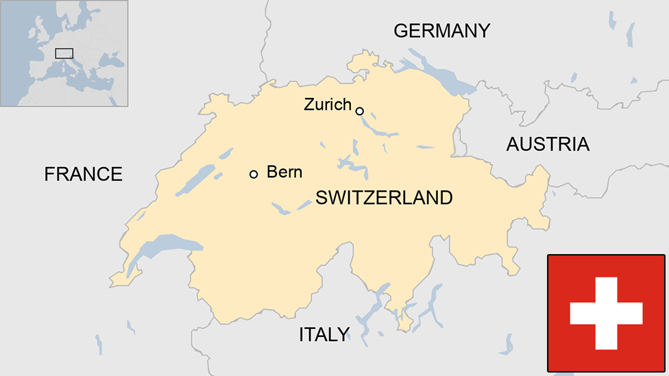

...

1989-1994 : SWITZERLAND
It began here


1990: where I called home for my early years --> CERN (European Laboratory for Particle Physics)
...

1992-1994: UK (Bristol)
In the UK I was pushed beyond my initial simple structure into something more complex.
At HP labs there was a lot of debate over what I would look like and how to make me more accessible
to the average user. This is where I grew to be able to have text flow around a figure with captions,
resizable tables, image backgrounds, math and more
...

1992-1998: US (Illinois- California- Massachusetts)
The U.S helped popularize me through the mass web but also led me to become fragmented due to competitive markets.
...

1992-1998: JAPAN
In Japan I became a global language with non latin character sets, multilingual HTML, and right to left scripts.
...

1992-1998: FRANCE
France helped get rid of my visual errors/clunkiness and improved my design through style sheets and layout separation.
...

modern day: GLOBAL
more web maps!